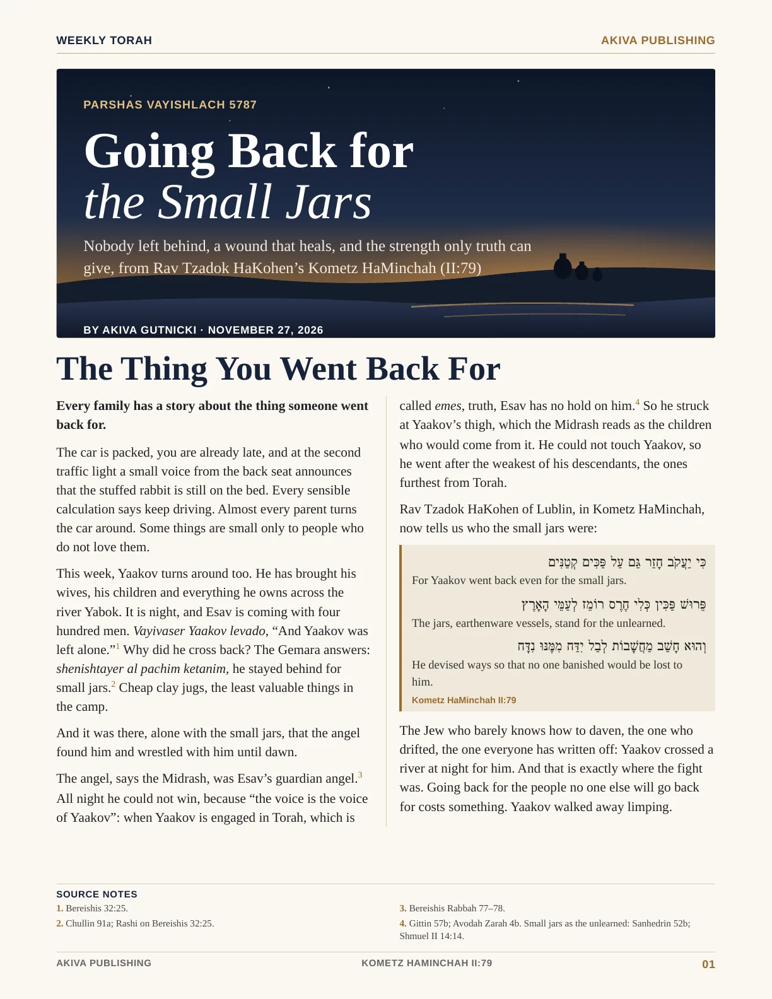
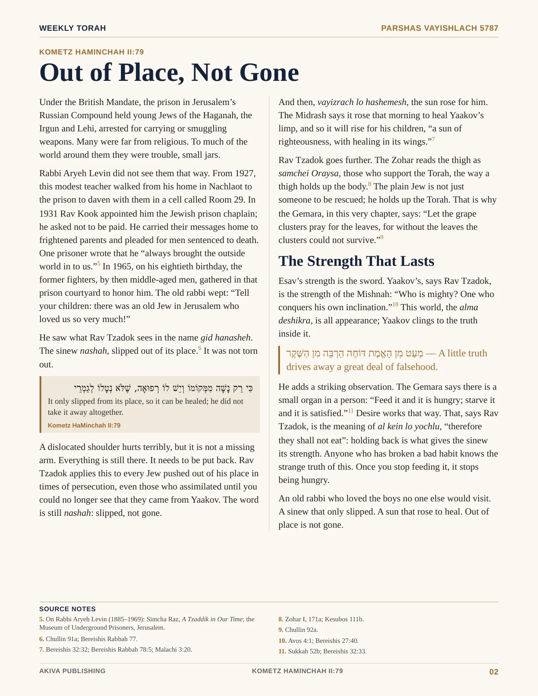
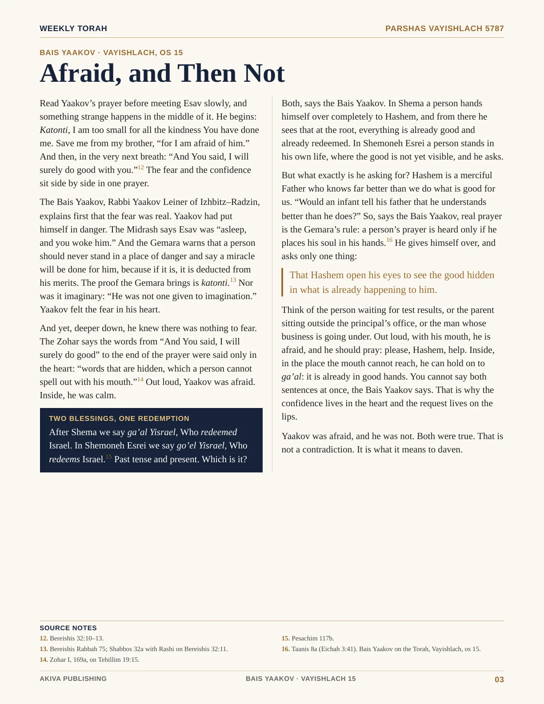
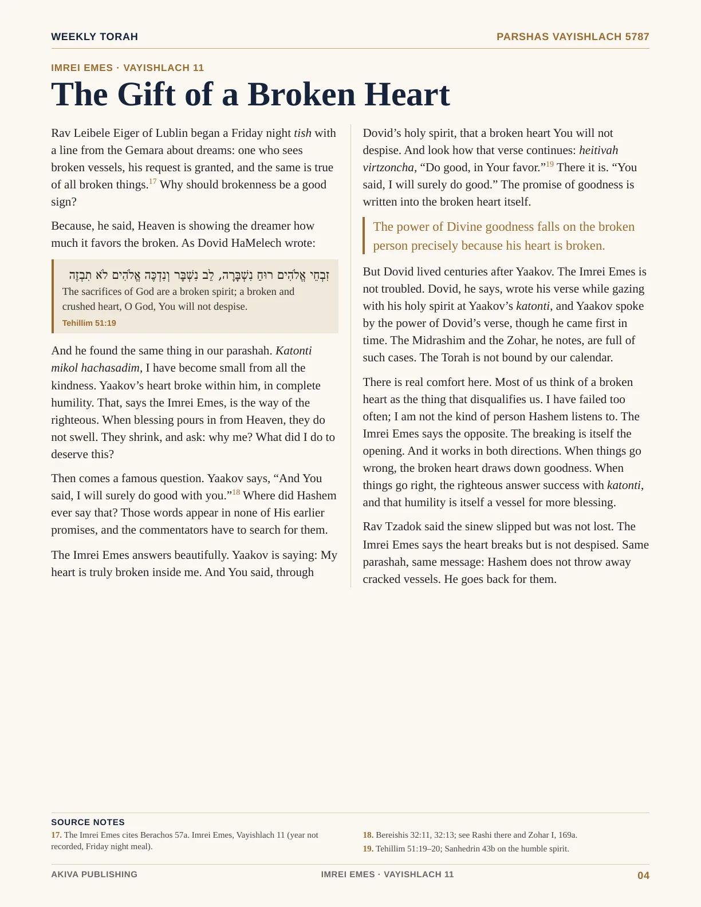
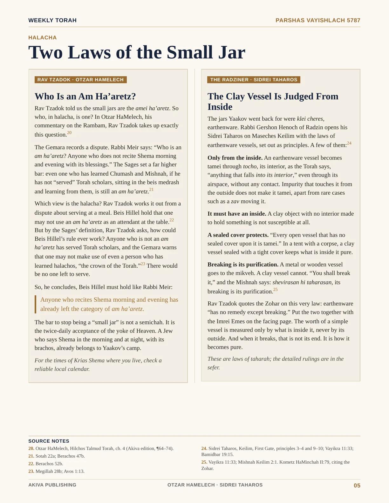
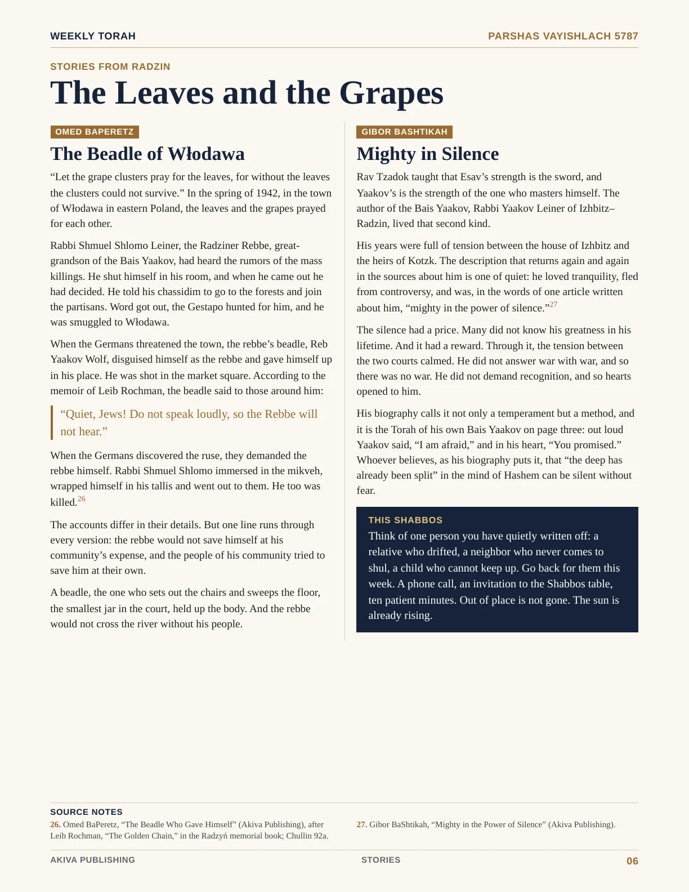

Nobody left behind, a wound that heals, and the strength only truth can give
The newsletter for the Shabbos table, shown page by page from the PDF. Open or download the PDF to print it.






Rav Tzadok HaKohen's Kometz HaMinchah (Part II, Section 79 on Parshas Vayishlach) in the Rav Tzadok Library reader, and as a 4-page PDF: the passages this essay draws on, phrase by phrase in Hebrew and English, with 21 source notes.